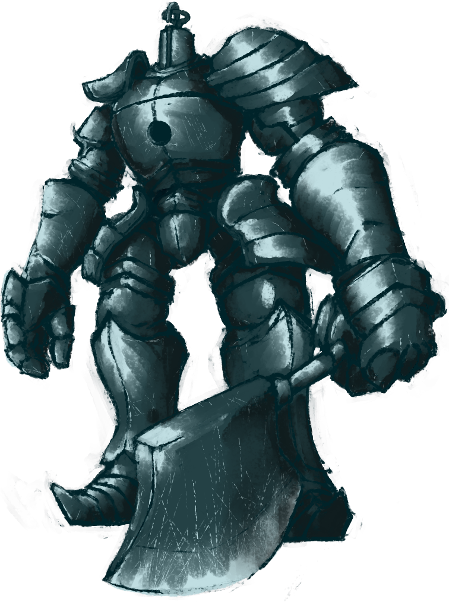

Системные требования
Минимальные требования:
Операционная система: Windows 7 SP1 64bit, Windows 8.1 64bit Windows 10
Процессор: Intel Core i3-2100 / AMD® FX-6300
Видеокарта: NVIDIA® GeForce GTX 750 Ti / ATI Radeon HD 7950
Оперативная память (Гб): 4.0
Свободное место на HDD (Гб): 25.0
Рекомендуемые требования
Операционная система: Windows 7 SP1 64bit, Windows 8.1 64bit Windows 10
Процессор: Intel Core i7-3770 / AMD® FX-8350
Видеокарта: NVIDIA® GeForce GTX 970 / ATI Radeon R9 series
Оперативная память (Гб): 8.0
Свободное место на HDD (Гб): 25.0
Сюжет
Эра Древних
Задолго до событий игры бесформенным туманным миром правили бессмертные драконы. Такой порядок вещей сохранялся до появления огня, вместе с которым пришли Свет и Тьма. Из Тьмы появились Они, нашедшие в первом пламени души Лордов:
Гвин, Лорд Солнечного света;
Ведьма Изалита;
Нито, первый из мертвых.
И только некий Пигмей, так скоро забытый, получил душу не такую как у всех — Тёмную Душу.
Со своей новообретённой силой Лордов, троица бросила вызов драконам: Гвин, поддерживаемый своими рыцарями; Ведьма Изалита и её Дочери Хаоса; Повелитель Могил Нито и его тёмные проклятия. Кроме этого среди драконов нашёлся предатель — Нагой Сит, он присоединился к восстанию Гвина и вместе со всеми практически погубил род драконов. Единственный оставшийся в живых — Черный дракон Каламит.
В отличие от остальных, тот самый Пигмей разделил полученную душу среди всех неживых. Осколки той Тёмной души стали известны как Человечность. Так появились люди, а Пигмей стал Первым человеком, известным как Манус. После всех этих событий наступила Эпоха Огня.
Эпоха Огня
Гвин и его соратники после победы над драконами перебрались в Лордран — землю Богов. Новообразованный пантеон Богов поселился в месте под названием Анор Лондо. Нагому Ситу в качестве награды за помощь в восстании была дарована частица души Гвина, титул Герцога, а также удел возле Анор Лондо, который был назван Архивами Герцога. Там Сит начал свои исследования по поиску бессмертия, планируя создать чешую бессмертия с помощью Изначального кристалла, похищенного у Присносущих драконов.
Закладывается город Новый Лондо, правителями которого становятся Четыре Короля. Им также была дарована Гвином часть души.
Но даже в эту светлую эру имели место конфликты, угрожающие новому порядку. Некий орден оккультистов плёл заговор против Богов. Используя Уголь Тьмы для создания оружия, способного сокрушить Божество, они намеревались заполучить силу лорда Нито, и с её помощью захватить власть в мире Лордрана. Заговор был своевременно раскрыт, и Уголь Тьмы был спрятан в Нарисованном мире Ариамис. Специально для защиты содержимого был создан Орден Стражей Картины.
Лордран процветал довольно продолжительное время. Но со временем Пламя естественным образом начинает гаснуть, если оно совсем затухнет, то эра Богов закончится.
Падение Изалита
Ведьма Изалита решила воссоздать Первое пламя в попытке продлить Эпоху Огня, но потерпела неудачу. Вместо Пламени было создано Ложе Хаоса и сама Ведьма стала его частью. Извращающая сила Пламени Хаоса породила орды демонов и также вызвала необратимые мутации у подавляющего большинства жителей Изалита. В том числе у двух Дочерей Хаоса (Квилег и Прекрасная Госпожа) и сына Ведьмы Изалита (Неутомимый воин).
Демоны вырвались наружу и стали разрушать города Лордрана. На помощь пришли Серебряные рыцари. В противостоянии с врагами их доспехи исказились и почернели, превратив солдат в Черных рыцарей. Вооружившись особым оружием, им удалось одолеть большинство монстров, однако на поверхности ещё блуждают единицы тех демонов.
С падением Изалита волшебство огня было утрачено, вместо этого появилась Пиромантия. Создателем новой магической силы была одна из выживших Дочерей Хаоса, Квилана, которая смогла избежать мутации.
Поддержание пламени
Видя, что пламя тухнет, Гвин жертвует собой и остатками души, отправляясь в Горнило Первого Пламени и искусственно поддерживая его. Таким образом, он стал Повелителем Пепла и продлил Эпоху Огня еще на тысячу лет. К Горнилу за Гвином также последовали верные ему Черные рыцари, Первое пламя полностью сожгло их, сейчас они скитаются по миру в виде обычных духов.
Фактически лишившись своего предводителя, Боги начинают покидать Анор Лондо. Некогда светлый город погружается во мрак, единственным источником света в этом месте теперь является вечная луна. Однако, одно божество осталось, им был великий сын Гвина, Гвиндолин. Используя своё мастерство иллюзий, Гвиндолин создаёт видимость благополучия в Анор Лондо — тут по-прежнему светит солнце, гиганты охраняют залы обители богов, в башне находится сестра Гвиндолина — Гвиневер. Но всё это лишь иллюзии.
Одержимый поиском бессмертия, дракон Нагой Сит начинает похищать людей с помощью своих подручных «Похитителей», но все его изыскания приводят к сумасшествию.
Падение Нового Лондо
Впервые начинает себя проявлять Бездна — враг всего живого и сущего. Изначальный Змей Каас искушает Четырех Королей, пообещав им искусство высасывания жизни и как следствие — бессмертие, в обмен на человечность жителей Нового Лондо. Подвергшихся искушению Четырех Королей поглощает Тьма, и в результате они находят своё пристанище в Бездне.
Рыцари города становятся служителями ковенанта Темных Духов. Они добывают человечность и приносят её в дар Каасу. Один из Четырёх Рыцарей Гвина, сэр Арториас, начинает борьбу c порождениями Бездны. Позже трое волшебников были вынуждены запечатать Новый Лондо, затопив город.
Падение Олачиля
Искуситель Каас уговаривает жителей древнего города Олачиль раскопать могилу Мануса. В итоге потревоженный Манус возвращается к жизни, а вместе с ним происходит заражение Олачиля Бездной. Сэр Арториас вместе со своим соратником Волком Сифом отправляются на помощь жителям Олачиля. Будучи окруженными порождениями Бездны, Арториас спасает Сифа, оставляя ему свой щит, защищающий от Тьмы. В результате Тьма овладела Арториасом, а Олачиль окончательно пал под натиском Бездны.
Из аристократии Олачиля спасается лишь принцесса Заря. Будучи запертой в золотом големе, она освобождается Избранным мертвецом через несколько столетий, но Манус затягивает её обратно в прошлое.
Знак Тьмы
Приблизительно за сто лет до событий Dark Souls мир уже был заражён проклятием, у многих людей начал проявляться Знак Тьмы. Клеймённые этим знаком обладали проклятием бессмертия. После смерти они становились Нежитью — ходячими мертвецами, постепенно теряющими разум и человечность, пока полностью не превращались в Опустошенных — бездумных обезображенных существ. Отмеченных Знаком Тьмы начали ссылать на север в последнее Прибежище Нежити — место, где они ожидали полного опустошения, место их последних дней.
Избранный мертвец
Отмеченные Знаком Тьмы являются потомками Первого Человека — Мануса, именно им под силу снова возжечь Первое Пламя и продлить таким образом Эпоху Огня. Только Избранный мертвец способен собрать Души Лордов и стать новым топливом для Первого Пламени. Во всяком случае, так утверждает один из Изначальных Змеев — Фрампт. Другой точки зрения о судьбе избранного придерживается Изначальный Змей Каас. Он считает, что нужно полностью погасить пламя и провозгласить новую эпоху — Эпоху Тьмы. Эпоха Тьмы — эпоха людей, мир, где вся власть будет принадлежать людям, а не Богам. И лишь Избранному мертвецу под силу предопределить дальнейшую судьбу этого мира, сделав свой выбор. Этот выбор за Вами.
Обезательные боссы
Демон Прибежища
Описание:
Самый первый босс, которого встречает игрок на своем пути. У босса существует 2 альтернативные версии: Бродячий Демон и Мудрый демон Огня.
Тактика:
При первой встрече со сломанным мечом вы максимум сможете его поцарапать. Вторая встреча произойдет после получения Вами снаряжения для вашего класса. Вы выйдете на небольшой выступ, с которого необходимо прыгнуть на Демона и нанести ему удар (во время падения нажать кнопку атаки). Таким образом, вы сможете снять боссу примерно от трети до половины здоровья, что существенно облегчит дальнейший бой. Босса можно довольно просто убить при первой встрече, если при создании персонажа были выбраны Черные огненные бомбы в качестве стартового дара, то в таком случае вы гарантированно получите Демонический молот. Большой ключ паломника и Флягу с Эстусом вы получите у Оскара из Асторы дальше по локации. Босса можно и одолеть обломком меча, но для этого нужен опыт игры и невероятное количество терпения. Существует баг: для этого вам надо подбежать к демону вплотную и выйти из игры. При входе в игру, вы появитесь в зале, рядом с боссом, он спрыгнет сверху, рядом с вами, но атаковать вас не будет (если вы не отбежите от него на расстояние 10-20 метров). Если долго стоять на выступе и смотреть на босса, он взлетит и ударит молотом, вызывая обрушение этого самого выступа и колоссальную потерю здоровья вашего персонажа.
Примечания:
Единственный босс, от схватки с которым можно попросту сбежать в пределах локации, так как чтобы продвинуться дальше по сюжету, его необходимо убить. Заметно меньше в размерах своих сородичей.
Демон Прибежища является аналогом босса под названием Авангард (англ. Vanguard) из игры Demon’s Souls, имеющего схожий внешний вид и набор атак. Он также появляется в локации-обучении в качестве первого босса. У данного босса нет собственной боевой темы. В бою с ним играет композиция Taurus Demon.
Горгулья
Местонахождение
В качестве босса в Уезде Нежити на крыше колокольни. Как только игрок отнимет горгулье половину здоровья, появится вторая.
Встречаются в Анор Лондо в качестве мини-боссов. Если у вас не был добыт Хвост-топор, то эти горгульи — второй шанс на его получение.
Атаки:
Удар в падении алебардой.
Одиночный выпад с алебардой.
Серия из 2-х горизонтальных ударов алебардой.
Серия из 3-х горизонтальных ударов алебардой.
Горизонтальный удар хвостом.
Диагональный удар алебардой снизу в полете.
Диагональный удар хвостом в полете.
Серия из 2-х диагональных ударов в полете.
Вертикальный удар алебардой.
Удар щитом (2-ая горгулья бьет кулаком).
Отскок.
Огненное дыхание (при уменьшении здоровья на 50%). В Анор Лондо, горгульи выпускают из пасти заряд молний.
Тактика:
На первом прохождении будут весьма полезны Золотая смола или Оружие магии.
Первая Горгулья уязвима к огню, но хорошо бронирована.
Обе крайне уязвимы к молниям. Молнии наносят 4-кратный урон, что даёт возможность, даже низкоуровневому персонажу победить босса.
Каждый удар можно блокировать.
Большую часть урона от огненного дыхания можно блокировать щитом.
Можно наложить Кровотечение.
Позади, слева от хвоста наиболее безопасная зона, в которой горгулья не застанет персонажа врасплох.
При сражении с боссом в одиночку, рекомендуется использовать в бою оружие с высоким уроном, чтобы как можно быстрее разделаться с первой горгульей и не сражаться с двумя одновременно. Для быстрого убийства отлично подойдет Меч Черного Рыцаря, Меч дракона, Полуторный меч или Клеймор, а также Золотая смола, если возможно. В первом бою с горгульями Колокола в качестве фантомов могут помочь Солер из Асторы, если его призвать перед боем, и Лотрек из Карима, если его освободить из камеры и поговорить с ним в Храме Огня. Диагональный удар хвостом в полете практически всегда попадает за щит и может опрокинуть персонажа, поэтому будьте осторожны.
Если имеется лук и достаточное количество стрел (около 170-200 деревянных), то можно абсолютно безопасно расстрелять горгулий из левого (от входа через туман) закутка возле башни - встав в самый дальний угол персонаж становится недосягаемым для любых атак (в том числе и для огненного дыхания).
Квилег
История:
Квилег — одна из дочерей ведьмы Изалита. Вместе со своей сестрой бежала из Изалита, когда город охватило Пламя Хаоса. К несчастью, их затронули мутации, хотя и не полностью. Нижние части тел сестер превратились в огромных пауков. Квилег обосновалась в нижней части Чумного Города, где ей и её сестре стала служить зараженная Черногноем нежить.
Атаки:
Поток лавы: изо рта паука выливается сплошной поток лавы слева направо. Перед этой атакой ведьма наклоняет голову паука вниз.
Лава: паук наклоняется и выплёвывает лаву под собой. Перед этой атакой ведьма быстро наклоняет голову паука.
Плевок лавы: паук выплёвывает на расстояние лаву, после чего ведьма отпрыгивает в сторону. Вблизи эта атака может показаться похожей на поток лавы, но отличается тем, что плевок состоит из более тонкой струи лавы, которая не остаётся на земле.
Топот: паук поднимает все ноги с одной стороны тела и затем топает, нанося большой урон. Даже если атака не попадает по игроку, то из точек удара вырывается ударная волна, которая наносит огненный урон, в результате чего трудно контратаковать. Перед атакой паук ненадолго наклоняется на задние лапы.
Выброс лавы: паук загорается и выплёвывает огненные шары во все стороны. Атака довольно редкая, но крайне опасная: урон от каждого шара высок, а их плотность не позволяет аккуратно уклониться ото всех. Лучше откатываться назад как только заметили начало атаки.
Атака лавой сбоку: после различных атак может последовать сплошной поток лавы четвертью круга сбоку тела ведьмы. Является реакцией на нахождение игрока сбоку.
Наскок с лавой: применяется, когда игрок находится на средней или дальней дистанции. Самая опасная атака босса. Паук опускает тело, затем быстро прыгает вперёд к игроку, выплёвывая лаву перед местом приземления. Если паук приземлится на игрока, то нанесёт огромный урон.
Тактика:
Квилег наносит урон как физической атакой, так и огнём, так что правильно подобранная экипировка существенно облегчит битву.
Сжечь ведьму не получится, у Квилег 100% защита от огненного урона, зато она уязвима к молниям.
Её атаки мечом довольно легко блокируются щитом, а нанесение урона её человеческой части, например, метанием ножей или стрелами, заставит её содрогнуться от боли. Но стрелять — не единственный вариант, можно взять косу или алебарду и ею доставать до человеческой части тела Квилег.
Использование пиромантии Сырая плоть (Уменьшает урон от огня на 45%) станет хорошим подспорьем в битве с боссом.
У босса есть слепая зона по бокам и сзади. Квилег легко победить, если наносить удары по паучьей части и лапам, держась сбоку.
Осторожно! Огненный взрыв может моментально вас убить. Поэтому когда Квилег наклоняется к земле, сразу отходите, держа щит поднятым.
Также есть несколько атак, применяемых не очень часто, но достающих в слепых зонах: Топот, Выброс лавы и Атака лавой сбоку (см. описание атак ниже).
Зона вплотную к боссу между передними лапами и человеческой частью недосягаема для всех атак, кроме взрыва, но выйти из неё сложнее, чем зайти, поэтому находитесь там на свой страх и риск: огненная аура может мгновенно вас убить, ведь есть шанс, что вы не сможете выбраться из лап паука.
Около середины арены на левой стене есть склон, на который можно запрыгнуть. Квилег не сможет достать атаками и её можно спокойно расстрелять из лука или убить магией.
Сиф Великий Волк
Местонахождение:
Босс находится в самом конце локации. Есть два способа добраться до него:
Открыть дверь в Саду Тёмных Корней с помощью символа Арториаса; Подняться по лестнице в локации Озеро Темных Корней после победы над гидрой; После чего перейти по одному из двух каменных мостов и двигаться прямо. Вход на арену отделяют ещё один большой мост и каменные врата.
Сюжетная линия:
Страж могилы Арториаса, одного из Четырёх рыцарей Гвина.
Сиф, будучи ещё маленьким, сопровождал Арториаса во время его путешествия в Олачиль. Вместе они вошли в Бездну, но были окружены фантомами, похожими на человечность. Арториас использовал магию щита для создания защитного барьера и, оставив Сифа в безопасности, продолжил путь. А маленького Сифа спасает герой из будущего, приведённый к волчонку молодой Альвиной (или он выбирается сам после победы над Бездной, если игрок его не найдёт).
Сиф является одним из немногих, кто посвящен в горькую правду о легенде Путника Бездны. Вместе с Альвиной волк сторожит могилу своего павшего товарища.
Если протагонист побывает в DLC до входа в лес и битвы со взрослым Сифом, и там спасёт его в виде молодого волчонка, будет другая заставка, когда он придёт к волку в настоящем. В ней при подходе к могиле Арториаса Сиф не рычит, а узнаёт, но всё же начинает бой. Хотя видно, с какой неохотой волк поднимает меч Арториаса.
Тактика:
Бой с Сифом визуально очень красив, а анимация волка проработана — получив значительное количество повреждений (90%), он начинает хромать. В битве Сиф использует гигантский меч. Он довольно подвижный противник, но не самый сложный босс в Dark Souls.
Его уязвимым местом для ударов является брюхо, а также уязвим к молнии и огню.
Перед началом боя наденьте самый тяжёлый сет, имеющийся на данный момент, наложите заклинание Железная плоть и атакуйте Большим огненным шаром Хаоса. С пламенем пиромантии Квиланы,улучшенным до +5, бой можно закончить секунд за 10. Есть и менее требовательные к снаряжению варианты. Потребуется имеющий высокий баланс щит (например, Каменный большой щит), и любое не медленное оружие, например, алебарда. Желательно: высокую выносливость, или предметы на её регенерацию. Ставим щит в дополнительный слот правой руки, а оружие оставляем в основном слоте. Берём щит в две руки и встаём в блок. Сиф (как показывает практика) прорубить подобную защиту не может (на НГ — точно). Ждём пока он нанесёт два удара из комбо, или прыгнет на вас и, выдернув оружие, наносим ему удар. Следует повторять до смерти, естественно, Сифа. Способ 2: Самое безопасное место — у него под ногами. В этом случае большинство его атак не достанут. Но после завершения комбо он будет отпрыгивать в сторону. После прыжка нужно максимально быстро подбежать снова к нему под ноги (при этом не словив его двойную круговую атаку). От его горизонтальных ударов мечем можно уклоняться прыжками назад, но лучше вперед, пробираясь туда же, к нему под ноги. Проверено, не задевает. У игроков с хорошей реакцией проблем быть не должно. От вертикального тяжелого прибивающего удара легко уклониться, отпрыгнув в сторону. Этот способ советуется тем, кто играет налегке (с загруженностью не больше четверти максимального веса), т.е. с легким снаряжением, как маги, воры и т.п. К тому же, лучше брать снаряжение с минимумом стабильности и максимумом защиты. Это позволит вам упасть от первого же удара в его комбо (если, не дай Бог, попадетесь), и спокойно пролежать все остальные.
Примечания
Убийство Сифа не является предательством ковенанта Лесных Охотников.
Из души Сифа можно выковать три различных предмета: мечи Арториаса (небесный и проклятый) и щит Арториаса. Все три требуются для получения достижения "Рыцарская Честь".
Если игрок спасёт маленького Сифа в Ущелье Бездны, то в награду получит Большой щит Искупления. Также волчонка можно будет призвать на битву с Манусом в качестве фантома.
Сифа можно убить, не заходя на арену с ним, при помощи лука и стрел (возможно отравленных). Как это делается показано на видео.
Прототип Сифа — волк Фенрир из германо-скандинавской мифологии, обреченный с мечом в пасти ждать Рагнарёка.
Железный голем
Описание:
Голема создали боги, чтобы он охранял проход в Анор Лондо. И это древнее создание убило множество героев, которые пытались пройти в город богов.
Голем не является живым существом. Это просто груда доспехов, внутри которых заключено его ядро, сделанное из костей драконов.
Местонахождение:
Босс находится на большом возвышении возле самой высокой башни крепости, на которой сидит великан, кидающий огромные огненные бомбы. Чтобы добраться до него, нужно пройти всю Крепость Сена.
Атаки:
Воздушный удар. Голем размахивается и пускает в направлении игрока волну, опрокидывающую и наносящую урон. Уйти от неё можно убежав или перекатившись в сторону.
Топот. Голем начинает яростно атаковать ногами.
Удары топором. При нахождении под ногами, Голем будет стараться достать вас в ближнем бою.
Захват. Наиболее опасная его атака. Если Голему удалось схватить игрока, он тут же швыряет его о землю, что отнимает много здоровья, а если игрок стоял возле пропасти, он мгновенно погибнет, улетев вниз.
Тактика:
Голем может просто сорваться со скалы в пропасть, если удастся приманить его к краю арены. Голем неповоротлив из-за своей комплекции, но при этом каждая его атака топором может отбросить игрока от него на приличное расстояние.
Перед тем, как отправиться убивать босса, сначала лучше убить великана, который находится выше по лестнице перед входом на арену с боссом. Если этого великана не убить, то во время боя с боссом он будет швырять в игрока бомбы. К счастью, бомбы падают только в центр арены, в ближней и дальней частях арены персонаж в безопасности.
Можно временно обездвижить Голема, если бить по одной из ног. Через некоторое время он потеряет равновесие и, если бить по второй ноге, то он упадет. Этим способом можно довольно легко убить босса, заманив его к краю арены, к пролому в ограде, и заставить упасть в этот пролом. Босс свалится с арены и погибнет, сколько бы здоровья у него ни было.
Если есть прокачанный арбалет и много болтов, то можно расстрелять Голема с расстояния, не подпуская к себе. Тактика следующая: место боя представляет собой длинный проход с ареной по середине. Нужно взять арбалет, включить автоприцеливание и стрелять в Голема; когда он приблизится к вам, отключить автоприцеливание и пробежать под ним в другую сторону коридора и так далее. Единственная сложность — нужно блокировать волну, которую он периодически пускает.
Если вы играете за персонажа с достаточным количеством веры (примерно 25) и получили чудо Копье молнии, то Голема можно убить за 10 выстрелов. Тактика проста — держимся удалённо и кидаем копья.
Место между ног Голема является слепой зоной, в которой большинство атак босса не достигают своей цели. Босса очень легко убить, если все время держаться спереди у его ног, а когда Голем атакует, сразу заходить ему за спину под ногами и наносить по несколько ударов (2-3 удара — оптимальный вариант). Когда босс начинает топать, сразу отходите или начинайте бить по другой ноге. Также хорошо работает тактика обхода босса вокруг левой руки с топором. Для этого нужно находиться в центре арены на возвышении и постоянно кружить вокруг босса. Голем гарантированно промахнется и откроется для ответных ударов.
Примечания:
Победив босса и активировав жёлтый круг, игрок может попасть в локацию Анор Лондо.
Перед боем с големом можно призвать фантома из соседней башни — Железного Таркуса.
Если босс схватит дружественного фантома, он некоторое время будет неуязвим к любым атакам.
Босса можно убить только на самой арене битвы. Несмотря на то, что Голем виден из многих мест, расстрелять его из лука, не пройдя сквозь туманные врата, нельзя.
Голем уязвим к молнии и огню.
В локализации название босса переведено неверно: Стальной Голем.
Голем — левша, так как атакует игрока, держа топор в левой руке.
При NG+ в ближнем бою почти для любого персонажа лучшим вариантом будет использовать копьё молнии, которое выпадет из мимика в Крепости Сена после того как вы его одолеете.
Орнштейн Драконоборец и Палач Смоуг
Местонахождение:
Эти боссы находятся в соборе Анор Лондо. Попасть к ним можно только через парадный вход, охраняемый Королевскими стражами, в центральный зал, где они в свою очередь охраняют покои Гвиневер Принцессы Света.
Описание:
О прошлом Орнштейна можно только гадать. Судя по его прозвищу, Орнштейн сильно отличился во время войны с драконами. Принадлежность к четвёрке говорит о его превосходных боевых навыках, к тому же Орнштейн является капитаном Четырёх Рыцарей.
Орнштейну принадлежат кольцо со львом и уникальное копье Драконоборца, наносящее урон молниями. Неизвестно, является ли это способностью самого копья или его владельца. Золотая броня Орнштейна, наоборот, защищает от молний. На момент событий игры он единственный из четырёх рыцарей, остался в Анор Лондо и охраняет иллюзию принцессы Гвиневер вместе со Смоугом, возможно, по приказу младшего сына Повелителя Пепла, — Гвиндолина.
Смоуг — палач в гигантской тяжелой броне с огромным молотом. Он хотел стать одним из Четырёх Рыцарей Гвина, но, поскольку добавлял кости своих жертв себе в пищу, не был принят. Несмотря на это, он остался с Орнштейном охранять иллюзию принцессы. Вполне вероятно, что Смоуг затаил обиду на то, что рыцарем Гвина он так и не стал — он незамедлительно обрушивает молот на поверженного Орнштейна (если тот убит первым), хотя в ролике можно увидеть, что пальцы Орнштейна шевелятся, и он жив. Скорее всего, это была иллюзия Орнштейна, поэтому он и без жалости забрал его силу. Хотя возможно, что он готов пожертвовать товарищем ради защиты принцессы.
Особенности:
Главной особенностью является то, что игроку приходится сражаться с обоими сразу. Орнштейн и Смоуг будут постоянно вместе нападать на игрока, пытаясь его убить. Стремительный и ловкий Орнштейн быстро сокращает дистанцию между героем и наносит резкие и мощные удары копьем и стреляет молниями. Смоуг неповоротлив, огромен, но невероятно силен, его атаки хоть и медлительны, но они очень быстро сносят выносливость героя, открывая его для удара товарища.
Оба противника не дадут вам расслабится на протяжении всей битвы, что делает их одними из самых интересных и сложных боссов за всю игру, так горячо любимыми всеми игроками.
Когда же с одним из них будет покончено, другой заберёт силы поверженного соратника, восстановит свое здоровье. К концу схватки, игроку будет противостоять либо Электро-Смоуг, либо Супер-Орнштейн. Ибо первый добавляет к своим ударам молотом урон от молний, а второй вырастает до гигантских размеров и начинает совершать более размашистые, силовые удары.
Примечания:
Среди игроков негласно считаются одним из сложнейших боссов.
Не пытайтесь атаковать Орнштейна колющим оружием. Он имеет огромное сопротивление к выпадам, и любые подобные атаки наносят ему только 10% от нормального урона.
Молот Смоуга служит палачу не только как оружие, но и как щит. Так, если вы попадёте в оголовье молота выстрелом из лука или любым заклинанием, то Смоуг не получит урона. Иногда он может "заблокировать" ваш выстрел удачным взмахом молота, но чаще всего это происходит во время таранной атаки.
В бою с рыцарями наиболее эффективны заклинания волшебства и оружие с магическим уроном. Огонь тоже эффективен, но в меньшей степени. Молнии наносят высокий урон Смоугу, но Орнштейн от них даже не почешется. Если вы клирик, то лучше всего закидать палача молниями, после чего рубить драконоборца оружием, закалённым по пути тайны.
Возможность получить предметы после победы зависит от того, кто был убит последним. Это также влияет на покупку определенного сета (Сет Орнштейна или Сет Смоуга) у Домналла из Зены.
На помощь в борьбе с этими боссами можно призвать Рыцаря Солера. Он отличный помощник в этой битве и, хоть он и не наносит серьёзного урона, но неплохо отвлекает одного из боссов и стойко выдерживает их сильнейшие удары.
Орнштейн перекочевал во вторую часть под именем Древний драконоборец. Хоть броня его и потускнела, кольцо потёрлось, а атаки молнией сменились на атаки тёмной магией. Даже битва c ним происходит опять же в соборе, но уже без напарника. Оружие все также на месте. В третьей части мы сражаемся с Доспехами драконоборца в качестве босса в основном сюжете и мини-боссом в DLC The Ringed City.
Вполне возможно, что они иллюзия. Ведь в третьей части говорится, что Орнштейн охранял Собор, а потом ушёл на поиски Первенца Гвина. Смоуг же, наоборот, остался охранять собор.
Имя и львиный образ Орнштейна, скорее всего происходят от композитора Лео Орнштейна.
Внешний вид и манера передвижения Смоуга делает его сильно похожим на борца сумо.
Редкий, но очень полезный глюк ИИ может помочь выиграть битву против Супер-Орнштейна "всухую". ИИ большинства мобов с дальнобойной атакой предписывают отвечать дальним боем на дальний, дабы вы не могли жульничать. Орнштейн может поступить также — и если между вами есть приличное расстояние и одна колонна (должна быть для вас левее) — он войдёт в цикл против обстрела из лука.
Ложе Хаоса
Описание:
Ложе Хаоса создала Ведьма Изалита, когда пыталась воссоздать Первое Пламя, но, создав его, не смогла контролировать. Ложе поглотило её, а её детей превратило в ужасных мутантов. Можно встретить некоторых из них: Квилег Ведьма Хаоса, Прекрасная Госпожа, Квилана. Также Ложе стало своеобразным инкубатором для всевозможных демонов хаоса. Отсюда родом такие как: Демон Капра, Демон Прибежища, Демон-Телец и большое количество подобных им монстров.
Местонахождение:
В Забытом Изалите, всё время нужно подниматься наверх. Рядом с туманом к боссу встречаются Дочь Хаоса, Кирк Шипастый Рыцарь (если игрок в человеческой форме). Когда зайдёте в туман, скользите вниз.
Атаки:
Атаки босса покрывают всю площадь перед ним, и прикончат вас максимум с трёх ударов даже сквозь блок . Безопасная зона находится в дальних краях арены, но именно туда босс всеми силами и старается вас не пустить. Кроме того, по мере битвы арена будет разрушаться, открывая бездонные провалы, куда атаки босса очень легко будут вас сталкивать, невзирая на ваш баланс и вес снаряжения.
Тактика:
Тактика 1
После скольжения бегите к левой или правой стороне локации. Держите щит поднятым, лучше всего подойдёт щит с высокой стабильностью, например большой щит Арториаса или щит Хавела. Ложе будет атаковать вас горизонтальными ударами руками-ветками. По бокам вы найдете оранжевые сферы, внутри сплетенные из корней и веток. Прорвитесь внутрь (тут босс вас не достанет атаками рук, но огненный шторм, что кастует босс, вас здесь может настигнуть) и разрубите красный корень.
Повторите то же самое с противоположной стороны. Будьте осторожны: пол начинает проваливаться, а сам босс добавит в свой арсенал новую атаку — вертикальный удар огненной веткой-крылом.
Разбив объекты по обеим сторонам сферы, бегите к телу самого Ложа. Пол под ним обвалится, обнажив ветку (как в Полости), на которую с легкостью при достаточной проворности можно спрыгнуть. Идеальный момент для прыжка - после вертикальной атаки рукой-веткой (не огненной). Рекомендуется дождаться этой атаки – если поспешите, то легко можете поймать этот удар на бегу или даже уже в прыжке, после чего вы гарантированно улетите в пропасть и погибнете. Также босс начнет атаковать вторым огненным крылом-веткой. Но и это ещё не всё, периодически он будет создавать огненную бурю между ними (схоже с одноимённой пиромантией). Крайне рекомендуется использовать пиромантию Сырая плоть — атака весьма мощная, и если вы не прокачивали живучесть, то даже будучи одетым в сет Дочери Хаоса (имеющий максимальное сопротивление огню среди всех доспехов) вы просто погибнете на месте.
Спрыгните на ветку-уступ (можно туда спрыгнуть и без использования прыжка, просто кувырком с самого правого торчащего куска плинтуса - так надёжнее). Пробивайтесь сквозь сухие ветки, которые были и в оранжевых сферах, до "сердца" Ложа Хаоса. Осторожней, огненная буря наверняка достанет вас и здесь. Ударьте по "сердцу" любым оружием и босс повержен.
Тактика 2
Так же можно подбежать в упор к "целому" дереву, стать на пятой клетке от границы, прицелиться из лука на верхнюю из горизонтальных веток справа или слева и кинуть огненную бомбу. Повторить с другой стороной, а дальше просто сделать 2 шага вперед, к "сердцу". Делать это нужно быстро, так как сразу после того, как одна из сфер будет сбита, босс начнет атаковать огненными атаками по площади.
Тактика 3
Для лёгкого убийства призовите двух дружественных фантомов. Один бежит налево, а другой направо. Таким образом вы сможете сразу добежать до "сердца" босса и сразу поразить его.
Тактика 4
В начале боя бежим направо, пока босс приходит в себя, успеваем добежать и разбить оранжевый корень справа. Сразу же после этого выходим в главное меню. Появляемся возле входа в туман (корень справа уже разбит, а пол начал проваливаться). Теперь бежим налево по самому краю, там безопасно. Не бежим напрямую к сфере, а расстреливаем ее из лука стоя в углу. В начале надо сбить ветки, а потом попасть в корень. Опять можно выйти в главное меню, чтобы начать с центра. Осталось совершить финальный прыжок и не упасть в яму перед боссом.
Примечания:
Если вы погибли на любом этапе убийства босса, то по воскрешении весь прогресс в виде отрубания веток и освобождения огненных крыльев сохраняется.
Битва с этим боссом очень похожа на битву с Богом драконов из Demon's Souls.
Чтобы не упасть в пропасть в то время, как босс разрушает каменный пол, старайтесь передвигаться по хорошо различимой на полу окружности, которая находится поблизости от босса. Эта тропинка не разрушается.
Изначально бой с Ложем Хаоса должен был быть не такой пассивный, а сам противник представлял из себя древообразное существо с 4 руками и без ног. Это также заметно на концепт-артах.
Нагой Сит
Предыстория:
Сит предал свой род и помог Гвину и другим Повелителям уничтожить род драконов. Причина в том, что он родился с дефектом - у него не было чешуи бессмертия как у других драконов, а значит рано или поздно он должен был умереть. Позже он стал герцогом и частью королевской семьи[1], а также получил осколок великой души от Гвина.
В дальнейшем он искал секрет бессмертия, похищая и проводя эксперименты над многочисленными существами, постепенно сходя с ума. Примером его неудачных экспериментов являются медузоподобные существа, которых выпускают люди-змеи, когда избранный мертвец попадает в тюрьму Нагого Сита. На основе исследований Сита было создано волшебство.
Избранный мертвец избавит его от мучений в ходе основной сюжетной линии игры, так как именно Нагой Сит хранит частичку великой души, которая требуется для открытия врат в Горнило Первого Пламени.
Атаки:
Замирает и испускает дыхание на позицию игрока, в которой он был до замирания. Это атака с эффектом проклятия, и её нельзя заблокировать, поскольку удар работает из-под игрока.
Замирает и испускает дыхание слева (от игрока) направо (мощный урон слева).
Хаотичные удары по земле боковым хвостом и основным хвостом (гораздо сильнее). Применяется, когда вы находитесь сбоку или сзади. Это то, с чем вы обязательно столкнетесь, пытаясь отрубить Ситу хвост. Крайне опасная атака, поскольку удары наносятся хаотично и по значительной площади (так что довольно сложно успеть вовремя покинуть зону поражения), наносят огромный урон, и щит от них не спасает – блок поглотит часть урона, но вы всё равно потеряете более половины здоровья и будете сбиты с ног.
Наклоняется и проводит левой лапой перед собой.
Взрыв вблизи босса. Этого можно легко избежать, отойдя на несколько шагов. Наносит много урона.
Тактика:
При первой встрече с Ситом по сюжету игрок должен умереть, т.к. в комнате отсутствует источник бессмертия Сита и его атаки по площади задевают игрока в любой точке карты, кроме места рядом со шкафом с книгами, непокрытого кристаллами (после прохода через туман бежать в левый угол) и прямо перед ним. Если не хочется потерять души, рекомендуется надеть Жертвенное кольцо перед заходом к Ситу или после. Если вдруг вы забыли купить жертвенное кольцо то, через стену тумана можно выйти с арены.
Эту первую, летальную встречу с Ситом можно избежать, если после того как вы поднялись на лифте ведущем в покои Сита, активировать лифт, и, как только он начнет спускаться, сначала спрыгнуть на перила платформы, а с неё, пока он спускается, уже спрыгнуть в галерею, которая ведет ко второму костру. Однако это очень трудный маневр, требующий хорошей тренировки и знания локации. Так что при первом прохождении безопасней будет позволить "убить себя" воспользовавшись Жертвенным кольцом.
При второй встрече, уже в Кристальном гроте, сразу же бегите за спину Сита и уничтожьте изначальный кристалл, дающий ему бессмертие. Будьте внимательны – в первый раз белой стены не будет, поэтому рекомендуется расправиться со всеми моллюсками, иначе они будут мешать вам в бою.
Есть несколько способов убить Сита без лишних потерь:
Необходимо встать перед ним на расстоянии и спровоцировать его. Он начнет проводить атаку вокруг себя, и в этот момент необходимо подбежать и сделать 2-3 удара до того, как он проведет атаку по площади.
У Сита есть своеобразная ахиллесова пята — это конец его хвоста (не тот который сзади, а который сбоку). Тактика заключается в том, что нужно подбежать к концу его хвоста и бить. Сит в этот момент начнет поворачиваться, поэтому необходимо не отставать от его конечности. Вся суть этого метода проста — Сит просто не может достать до игрока своими атаками, если успевать находиться около конца хвоста. При выборе этого способа, может сильно помочь травяной щит, ускоряющий восстановление выносливости, который должен находиться за спиной, а меч берется двумя руками. Но всё равно это достаточно сложно, потому что разворачивается Сит удивительно быстро – может статься, что вы будете просто бежать, и бежать, и бежать за хвостом, и не успеете его ударить даже с прыжка, поэтому не стоит превышать свою загруженность выше 25%, дабы спринт и бег не были замедлены - в этом может помочь кольцо Хавела. Лучше провоцировать его на атаку (идеально, если он использует дыхание слева направо) и уже в это время бить.
После уничтожения кристалла бессмертия подождите, пока Сит повернётся к вам, а затем бегите к правому хвосту и бейте его всеми силами: он будет поворачиваться и практически не сможет вам навредить.
Если на арене остались фигурки проклятых игроков, то Сит упрется в них и не сможет двинуться дальше. Совершенно статично убивается дистанционным оружием.
Атака по площади наносит не только урон, но и накладывает проклятие. Поэтому целесообразно будет экипировать вещи с наибольшим сопротивлением от проклятий. Например, сет Пепельной девы и/или Кольцо проклятого укуса. Так же будет неплохо иметь 10 активных человечностей.
Чудеса Волшебный Барьер и особенно Большой Волшебный Барьер прекрасно поможет в бою, позволяя не бояться атак дыханием.
На самом деле, лучше всего убивать его именно с дистанции. Сит крайне медленно передвигается, а все его атаки действуют по области рядом с ним (хотя некоторые накрывают значительную площадь, но всё же применяет он их именно когда вы находитесь рядом). Таким образом, не составляет никакого труда бегать по арене, оставаясь на значительном удалении от Сита и совершенно безнаказанно его расстреливая. Когда он подойдёт близко, дождитесь начала атаки, и бегите ему за спину, на максимальную дистанцию захвата цели. Повторять до победы. Улучшите лук по пути молнии, и сражение быстро закончится. В ближний бой стоит идти только если вы хотите отрубить хвост.
Уязвимости:
Электрические атаки - наносят очень много урона. Например, клирику, имея стандартный Холщовый талисман, Веру 30, Кольцо солнечного первенца (или Корону Зари), и при активированной Внутренней силе, достаточно исключительно чуда Копье Молнии, чтобы убить Сита, буквально не сходя с места.
Огненные атаки - тоже эффективны, но наносят меньше урона.
Живот - Сит получает повышенный урон, если бить его по выпуклости на животе.
Отрубание хвоста:
Заманите босса как можно ближе к светящемуся осколку. Лучше всего вести его вдоль стены, чтобы, если он будет атаковать дыханием, то Вы сможете отбежать к другой стороне. Когда босс будет близко к Вам, он замрёт и начнёт атаковать дыханием, тут же бегите ему за спину. Сит разрушит светящийся осколок своим дыханием и на какое-то время будет обездвижен. Не используя захват, атакуйте хвост сзади самым сильным оружием в двух руках. После 3-5 хороших ударов у Вас должно как раз хватить время, чтобы дорубить хвост, пока босс не развернулся.
Отрубить хвост можно даже мощным поджиганием или же подобными заклинаниями, но с хорошо прокачанным пламенем пиромантии.
Ещё можно взять скорострельный лук и бежать вслед за правым хвостом Сита. Время от времени он будет делать атаки и стоять на месте, тогда появится время выстрелить 1-2 раза по хвосту и так до самого отрубания. Тактика довольно долгая, но безопасная, так как ни одна из атак Сита Вас не достанет. Принципиально бежать именно за правым хвостом, т.к. его атаки рукой и дыханием идут слева направо.
Отрубив хвост, Вы получите Большой лунный меч в свой инвентарь.
Примечания:
После первой встречи не бегите туда же, а найдите во втором зале на третьем этаже комнату, там спуститесь вниз и выходите в лес, потом к кристальному гроту и после будет уже бой с Ситом. Если вернуться в ту же комнату где вы его встречаете в первый раз, он снова вас убьет.
Если вы умрёте в первом бою, в следующий раз перед входом на арену появится стена тумана. Благодаря этому, моллюсков можно будет уже не убивать, а просто пробежать мимо. Сит находится достаточно далеко от входа, так что, учитывая его медлительность, у Вас будет достаточно времени, чтобы спокойно активировать заклинания, зачаровать оружие, и так далее.
После перемещения Нагого Сита в Кристальный грот в комнате, где произошла первая битва с ним, в центре будет стоять сундук с Большим Волшебным Углем.
Логан Большая Шляпа восхищается Ситом.
Сит создал Кристальных Големов, Медуз и Лунных Бабочек. Он же создал уголь для кристального оружия и усилил подчинённых ему полых кристаллами.
Из диалога Орнифекс можно предположить, что Сит также создал искусство транспозиции уникальных душ в предметы и заклинания.
Присцилла Полукровка, возможно, является дочерью Сита или результатом его экспериментов.
Ему служат Медиумы.
Возможно, что Сит пытался достичь бессмертия с помощью кристаллов. Это объясняет его любовь к Кристальному гроту и большое количество Кристальных тварей.
При первой встрече с Ситом существует "слепая зона", где атаки Сита не могут задеть героя. Она находится прямо перед ним, если подойти к нему вплотную. С этой точки ему можно даже наносить урон, но он будет почти мгновенно восстанавливать утраченное здоровье и убить вы его не сможете.
Сопротивление волшебству довольно высокое, но победить с его помощью можно.
После смерти Сита, его дело продолжилось. Последователями были Знатоки кристальных чар и Оцейрос.
При первой встрече от него можно уйти назад через стену тумана.
В описании шлема медиумов говорится о том, что у Сита плохое зрение, но после примения заклинания или кольца он всё равно активно реагирует на вас.
Скорее всего является либо создателем Полускорпиона Тарка и его жены Скорпиона Нажки, либо тем, кто превратил их в Скорпионов.
Возможно, является родителем дракона по имени Мидир.
Хоть перевод "Нагой" и подходит, но правильнее будет называть его "Бесчешуйный".
четыре короля
Описание:
Желание силы и власти стало причиной их падения во тьму, в Бездну, через которую когда-то прошёл легендарный Арториас Путник Бездны. Тёмный изначальный змей Каас даровал Четырём королям силу Повелителя Тьмы, которая способна высасывать человечность. Жители Нового Лондо были принесены в жертву Бездне, не обретя покоя и став Призраками, рыцари же стали Тёмными духами на страже затопленных руин.
Местонахождение:
Чтобы попасть к этому боссу, вы должны сначала получить ключ у Ингварда, чтобы слить воду в Руинах Нового Лондо. Ингвард сам отдаёт ключ, если игрок добыл чашу, или же можно просто убить его.
Атаки:
Магический взрыв: босс заворачивается, перед ним появляется фиолетовая аура, потом проходит волна магии во все стороны. Удар сильный, каст короткий, достаёт далеко — чтобы уйти из зоны поражения, нужно бежать или сделать несколько быстрых кувырков от босса.
Клив буквой Х: сначала проходит удар в форме \, потом /. Относительно слабые удары, 50/50 магия/физ урон(как и у всех атак оружием). Дальность небольшая.
Горизонтальный клив: две косые атаки, сектор около 240 градусов. Дальность небольшая.
Вертикальный удар: сверху вниз, небольшая дальность, средний урон.
Выпад: дальность ненамного больше, чем у остальных атак оружием, урон около 150% урона остальных ударов.
Захват: прелюдия к этой атаке похожа на магический взрыв с одним отличием: после оборота босс закидывает левое плечо и начинает идти на игрока. От атаки может спасти своевременный отход (буквально во время оборота) и несколько быстрых кувырков (в легкой броне соответственно). Эта атака, помимо урона, будет высасывать вашу активную человечность если такова имеется (за один захват отнимается одна человечность). После такой атаки на арене моментально появится ещё один противник, но только в том случае, если Королю досталась человечность. По этой причине не стоит прыгать в бездну, предварительно не обнулив счётчик человечности.
Наводящиеся магические снаряды — можно увернуться.
Большой наводящийся снаряд: летит гораздо медленней, снимает больше, чем вся пачка обычных магических снарядов. Блокируется щитом с высоким блокированием магического урона (Щит с эмблемой, Большой щит Хавела), при этом не тратится выносливость. Можно не блокировать, а при виде каста данного снаряда быстро бежать к королю и постоянно находится вплотную к нему - снаряд полетает некоторое время вокруг короля и развеется.
Уязвимости:
Огонь.
Молнии.
Оружие с магическим уроном.
Тактика:
Хотя босс и называется Четыре Короля, но новые копии королей будут появляться, пока вы не нанесёте достаточный урон, чтобы полностью опустошить полоску здоровья босса.
Босс наносит сравнительно небольшой урон (на NG) по игроку, который усиливается с появлением всей четвёрки Королей. Логичный вывод, что следует вести бой не со всеми одновременно, а по очереди, быстро уничтожая их. Затягивание боя практически обречено на провал.
Достаточно проста в использовании и полезна тактика обхода: нужно как можно быстрее подойти к королю в самом начале битвы, предварительно надев легкую броню и зарядив оружие смолами. На все его удары в ближнем бою реагировать уходом влево вокруг него по часовой стрелке, последовательно ударяя по нему своим оружием. Для безопасности также можно взять щит со 100% сопротивляемости к физ. атакам, который поможет, если босс резко повернется или вы отойдете на некоторое расстояние. Когда он начинает готовиться к магическому взрыву или захвату, нужно сделать несколько кувырков назад, после подбежать к нему и атаковать его, продолжая двигаться. После убийства одного короля переходим к следующему.
Весьма эффективна тактика тупого нападения: мы делаем себе большую защиту, берём быстрое и мощное оружие и просто тараним босса, периодически делая паузы на лечение. Нам потребуется:
Сет Хавела, отличные доспехи с защитой от магического урона и высоким балансом. (можно использовать Доспех Хавела, а остальные части взять из Сета Стража для увеличения магической защиты)
Железная плоть, добавляет стойкость от отброса если мы не желаем надевать Хавела и хотим вести бой в своей робе. Можно отлично сочетать и с самим сетом добавляя себе огромное игнорирование урона.
Яростный меч Квилег, быстрый, имеет хороший урон, даже при невысоких параметрах персонажа.
Хорошо точенное оружие (например: утигатана +15) и смолы на огонь, или молнии.
Ударов будет много и нам потребуется воспользоваться: маской Ребенка, кольцом Клоранти или Травяным щитом.
Пиромантия, с хорошо прокачанным катализатором, может выжечь босса даже не прибегая к оружию. Отлично сочетается с тактикой прямого нападения. Лучше всего работает заклинание Мощное поджигание, оно наносит всегда полный урон и позволяет атаковать часто, в то время как кнуты будут попадать лишь частично, а шары вообще не будут попадать из-за специфики фигуры и движений босса.
Магия, поможет если не подпускать босса к себе, однако так нам все равно придётся сражаться минимум с двумя Королями, ведь мы будем затрачивать время на бег, атаки и лечение.
Также можно как раз-таки быть вблизи босса, пользуясь магией: нам труднее промахнуться, боссу труднее попасть, 1-3 перекатами можно избежать большей части атак.
Напарник. Отлично работает тактика когда один танкует, второй атакует дистанционно, с лука или магией. Однако когда оба танкуют, то это может сыграть плохую шутку, Короли чаще начнут применять магический взрыв.
Чем дальше вы находитесь от королей, тем больше они урона вам наносят. Так, если один из королей заденет вашего персонажа кончиком меча — будет нанесён приличный урон. Старайтесь держаться поближе к королю, которого сейчас убиваете, если это возможно.
Большой волшебный барьер почти полностью блокирует атаки.
Призыв Фантома:
Из NPC-фантомов на битву с Четырьмя Королями можно призвать Ведьму Беатрис, при условии что вы призывали её на бой с Лунной Бабочкой. Ищите её знак призыва справа от тумана к боссу.
Беатрис не наносит урон полоске босса, только воплощениям Королей. Это может помочь, если вы недостаточно быстро их убиваете и появившиеся, спустя какое-то время, остальные Короли берут вас в клещи. В последних патчах урон начал наноситься и самому боссу, а не только воплощениям.
Беатрис часто разбивается на лестнице от неудачного падения с нее, когда вы сами прыгаете по лестничным пролетам/площадкам. Лучше просто бежать, немного упершись в стену. Также, после входа в туман Беатрис начинает стрелять в висящего внутри призрака, но так как она не владеет проклятым оружием, то не сможет его убить. Можно просто спуститься по лестнице до самого конца и подождать, когда она придет.
Вы сможете видеть знаки призыва дружественных игроков фантомов когда спустите воду. Призываясь на помощь с боссом, учитывайте, что вам также требуется Кольцо Арториаса чтобы выжить в Бездне.
Примечания:
Не нужно каждый раз после смерти бегать до босса из Храма Огня через всю локацию и кучу призраков, бьющих сквозь стены. Существует импровизированный шорткат. После спуска из Храма на лифте и прохождения двух первых мостиков, вы попадаете в место, где появляются первые два призрака. Вместо того чтоб подниматься вверх по лестнице и проделывать долгий и тернистый путь, на площадке с призраками можно побежать в правый угол и спрыгнуть вниз, почти в конец локации.
Не обязательно спускаться вниз по винтовой лестнице за туманом, в бездну можно спрыгивать с любой высоты, вы не разобьетесь и не получите урона.
Если бить этого босса клинком хаоса, то вы будете получать двойной урон от катаны, поскольку одновременно вы сносите две полоски здоровья.
С Королями нельзя начать бой без Кольца Арториаса, иначе вы будете умирать от падения в Бездну, но после победы можно ходить по Бездне без Кольца Арториаса. Так же во время битвы нельзя снимать Кольцо Арториаса — вас поглотит Бездна.
Тот факт, что Беатрис не погибает при падении в Бездну, говорит о том, что она также носит Кольцо Арториаса, однако это не более, чем игровая условность.
Четыре Короля — единственный босс-обладатель Осколка Великой Души, для убийства которого не требуется установка Великой Чаши в Алтаре Огня.
Убийство этого босса является обязательным условием для вступления в ковенант Темных Духов, так как возможность поговорить с Каасом появится только после победы над Королями.
Предположительно, данный босс является отсылкой к Назгулам из вселенной "Властелина Колец" Джона Р. Р. Толкина. На эти мысли наводит внешняя, хоть и приблизительная схожесть Четырёх Королей с Назгулами (с их истинным обличием в виде призраков). Сама история Четырёх Королей делает намёк на эту отсылку более явной, поскольку также схожа с историей Назгулов из легендариума Толкина. Также некую роль в этой отсылке играет и Кольцо Арториаса, что занимает ключевую роль в прохождении данного босса и является некоей аналогией Кольца Всевластия из "Властелина Колец".
При сражении вместе с дружественным фантомом, один из Королей может использовать на кого-то захват. В это время его тоже можно бить, при этом не будет "всплывающих" цифр урона и урон данной копии тоже не будет наноситься, но будет тратиться полоска здоровья самого босса.
Во время анимации исчезновения "убитого" Короля (вращение вокруг своей оси и вспышки белого света) его также можно бить и будет убавляться полоска здоровья босса. Полезно это использовать если следующий еще не появился или же слишком далеко. Медленным оружием можно успеть нанести порядка 2-3 ударов, более быстрым — около 5 или больше.
Нито Повелитель Могил
Местонахождение:
Нито обитает на территории Склепа Великанов, найти его убежище крайне трудно, так как оно хорошо скрыто. Один из способов попасть в убежище Повелителя могил - это перемещение с помощью гроба. Гроб находится в одном из склепов катакомб, напротив Титанитового Демона. Для перемещения надо иметь Око смерти в инвентаре, которое можно подобрать там же у демона.
До Нито можно добраться и другим способом. Пройдя абсолютно темный участок Склепа Великанов, вы попадёте уже на освещённый участок, ведущий прямиком к убежищу. Важно, чтобы Великая Чаша была установлена на Алтарь Огня, иначе путь будет заблокирован Золотым туманом.
Описание:
Нито — первый из мёртвых, повелитель смерти. На заре Эры Огня заполучил одну из Великих Душ и в войне против Драконов, Нито насылал миазмы болезней и смерти на своих врагов.
Внешне выглядит как нагромождение костей и черепов, образующих аморфный силуэт.
Несмотря на это, Нито все же имеет тело. Представляет собой худощавое гуманоидное существо. Его ноги часто можно увидеть выступающими из-под плаща во время боя.
Атаки:
Один либо два полу-круговых удара мечом перед собой.
АоЕ удар тьмой.
Удары из под земли магическими мечами.
Захват (его левая рука начинает светиться красным), от которого лучше всего отходить назад.
Тактика:
Атаки мечом Нито накладывают яд, поэтому рекомендуется либо использовать Кольцо Ядовитого Укуса, либо броню с высоким резистом от яда, либо запастись Цветущим фиолетовым мхом.
В бою с Нито рекомендуется использовать святое оружие, так как он в начале боя призовет трех скелетов, которые при убийстве обычным оружием восстанут через какое-то время. Однако этих же скелетов можно игнорировать, подставляя под AoE атаку самого Нито.
Не бегайте по локации от Нито, старайтесь вести бой там же где и зашли в локацию. Дело в том, что дальше стоят Скелеты Гиганты, также возрождающиеся после смерти, если не убиты святым оружием, и битва усложнится. При этом, после окончания ролика с появлением Нито, нужно всё же пробежать немного вперед, навстречу ему, чтобы избежать дальней атаки, которая следует почти сразу, если игрок будет просто стоять на месте или даже, если побежит в обход по правой стороне. Во время этой атаки есть характерный звук, можно спокойно лечиться, а во время звучания — быстро уворачиваться.
Нито крайне неповоротлив и медлителен, просто кружите вокруг него - он не сможет попасть своим ударом меча, и после него будет долгое время уязвим, опасность представляет лишь его AоE или дальние атаки.
Иногда, на ближней дистанции Нито может то ли схватить, то ли насадить на меч, что при малом количестве здоровья может окончиться довольно плачевно.
Он уязвим для огненного (включая пиромантию и Черную смолу) и небесного оружия.
Также нужно убрать ВСЕ предметы, которые так или иначе создают свет (Личинка Света, Заклинание Света и Череп-фонарь), так как Нито начинает чаще атаковать своей дальней атакой.
Совет для лучников и магов: наденьте Кольцо тумана и Кольцо с дремлющим драконом.
Совет для рыцарей: можете просто взять Большую секиру Короля Драконов, желательно прокачанную, и бить Нито AoE атаками (оружие в двух руках, сильный удар). Так, вам и скелеты не будут мешать, и сам Нито умрёт очень быстро, не успев нанести достаточное количество урона.
Совет для тех кто помогает Хозяину мира в роли союзного фантома. Если вас призвали, и у вас небесное оружие, то оно не будет работать, скелеты продолжат вставать.
Примечания:
Известно, что до основных событий игры, некий тайный культ попытался украсть силу Повелителя Могил. И более того, у одного некроманта это получилось.
Он единственный глава ковенанта, которого нужно убить, чтобы пройти игру.
После его гибели нельзя больше повышать свой уровень в ковенанте Слуги Повелителя Могил.
Нито нельзя вызвать на бой, если игрок попал к нему, воспользовавшись гробом. Атаки из лука или арбалета будут проходить сквозь него.
Во вступительном синематике он описывается как "первый из мёртвых" (англ. Dead), что не следует путать с обычной нежитью (англ. Undead).
После убийства Нито на месте его появления возникает костёр, который можно разжечь и с его помощью перенестись к остальным. Также прочие скелеты, которых вы не убили святым оружием во время схватки с боссом, умирают.
Известно, что Нито — создатель Мильфанито. Фенито также следуют учению Нито.
Олдрик в третьей части создаёт иллюзию его клинка.
Гвин Повелитель Пепла
История:

Гвин был повелителем Света и отцом минимум четверых детей: первенца Солнца, Гвиневер, Гвиндолина и Филианоры. Йоршка, называющая себя сестрой Гвиндолина, также может быть ещё одной дочерью Гвина. Гвин и его дети были богами, однако первенец был позже лишен божественного статуса в наказание за заключение мира с Древними Драконами.
На закате эры Древних Гвин нашёл одну из четырёх уникальных душ, давшую ему силу Повелителя. Нито Повелитель Могил и Ведьма Изалита, также обладатели душ Повелителей, стали его союзниками в войне против драконов. Гвин возглавил армию верных рыцарей, которые использовали на войне чудеса, подобные Копью молнии. Мощь молний Гвина и его армии, смертельная сила Нито и огненные бури ведьмы Изалита, а также предательство Нагого Сита, обеспечили победу над драконами, тем самым начав эру Огня.
Под его началом сражались многие великие герои. Четыре рыцаря Гвина были самыми лучшими и доверенными воинами: Орнштейн был капитаном четверки, меткий стрелок Гох командовал лучниками-драконоборцами, благородный Арториас боролся с Тьмой, а под началом Сиаран был отряд женщин-убийц — Клинков Повелителя. Ещё одним командиром и боевым товарищем Гвина был Хавел Скала.
Когда Первое Пламя стало угасать, Гвин, с частью своих рыцарей, отправился в Горнило Первого Пламени чтобы принести себя в жертву и возжечь огонь. Перед этим он разделил свою силу между детьми и отдал части своей Души Повелителя Четырем Королям и Нагому Ситу; несмотря на это, его душа осталась достаточно могущественной, чтобы продлить эру Огня ещё на 1000 лет.
Фрампт Королевский Искатель и Гвиневер Принцесса Света описывают намерения Гвина как исключительно благородные, но у Кааса Тёмного Охотника свое мнение. Каас утверждает, что Гвин боялся наступающей эры Тьмы — эры людей, и Тёмного лорда, который должен был родиться среди людей. Пожертвовав собой и велев своим детям быть пастырями людей, Гвин попытался удержать власть богов над людьми и отсрочить рождение Тёмного лорда.
Атаки:
Прыжок: Гвин прыгает к игроку, когда тот слишком далеко и делает взмах из-за головы.
Выпад: Гвин делает выпад по направлению к игроку и колет оружием, когда игрок немного выходит за его радиус атаки.
Серия ударов: Несколько быстрых рубящих ударов.
Мощные удары: Гвин берёт оружие в две руки и делает более сильные, но и более медленные серии ударов.
Хватка: Гвин делает захват, наносит огненный урон и отбрасывает игрока от себя.
Пинок: Гвин пинает игрока, когда тот находится близко; обычно следует за хваткой.
Тактика:
Атаки Гвина можно парировать, а сам он уязвим к магическому оружию и огню. Но не вздумайте атаковать его молниями, он обладает абсолютной защитой от них. Также Первому Повелителю можно сделать удар в спину, отравить и пустить кровь.
Самый простой способ. Необходим парирующий кинжал или Щит-мишень (самая долгая анимация парирования => больше шанс парирования). Любую атаку (кроме захвата) парируем и атакуем с Кольцом Шершня и самым мощным оружием, убивается минуты за 3-4. Наилучшее оружие для такой тактики – Рапира Велки, особенно если у персонажа много интеллекта. Бонус от тайны, высокий магический и физический урон и стандартный для всех колющих мечей бонус к критическим атакам позволят вам закончить битву очень быстро.
Способ убийства Гвина для персонажей, более-менее прокачавших значение выносливости:
Берём тяжелое оружие, с помощью которого вы с одного удара можете ошеломить противника (идеальный вариант - Двуручный меч с его мощной силовой атакой).
Тяжёлый щит с хорошим параметром стабильности (например, Большой щит Арториаса или Большой щит Хавела). С тяжёлым оружием порой придется очень долго терпеть в ожидании удачного момента для удара - средний щит не подойдет, разве что вы хорошо владеете уворотами, но в таком случае щит вам вообще не понадобится (разве что Травяной щит на спину для восстановления выносливости).
Суть тактики: бить силовой атакой, что приведет к ошеломлению Гвина, но нужно понимать, когда нужно будет бить (если начать тяжелый замах в неудачный момент Гвин сам нанесет вам очень много урона, заодно успешно сбив вашу атаку). Неплохие моменты для нанесения удара появятся у вас после серии его ударов (непрерывно в количестве 4 штук) или после вашего уворота от его попытки сделать захват. Также в этой тактике не стоит постоянно стоять в упор к нему - Гвин может сделать пинок.
Если же вы призвали на бой Солера, то дождитесь момента, когда Гвин переключится на него и бейте с двух рук. Учтите, удары Гвина имеют большой радиус, он может задеть вас даже если вы стоите сзади. Также будьте готовы, что Гвин резко переключится на вас - если вы его били с двух рук, то снова доставайте щит и держитесь до удачного момента. Вероятность смерти Солера будет зависеть от вашего напора - не будете успевать бить (и ошеломлять) Гвина, то Солер погибнет. Не следует выбирать такую тактику если у вас низкий параметр выносливости - силовые удары опустошат всю (или почти всю) полоску, и у вас не будет сил на блокировку атаки Гвина, ибо вы можете не попасть по нему силовой атакой, а тот может резко переключиться на вас, уже не имеющего возможности блокировать атаки,и схватка может быстро закончиться для вас фатальным уроном.
Существует также тактика для более лёгких и подвижных персонажей:
Гвин наиболее уязвим после прыжковой атаки (с которой он начинает бой) - в этот момент можно ударить его от двух до четырех раз, в зависимости от носимого оружия.
Соответственно, нужно уклоняться от всех его атак, набирать дистанцию, и заставить Гвина совершить прыжок. От этой атаки требуется уклониться перекатом в сторону, а потом атаковать в ответ. Два обычных удара Муракумо или любым молотом с двух рук ошеломляют Гвина, и пока он шатается, можно снова начать набирать дистанцию.
Повторять до победного конца.
Минусом тактики является то, что иногда Гвин не хочет прыгать, и от его атак приходится довольно долго уклоняться.
Можно так же воспользоваться универсальной тактикой, которая подойдет любому персонажу:
Для лучшего эффекта желательно иметь оружие с выпадом, например копье или меч с наличием выпада, вроде Клеймора.
При битве с боссом необходимо двигаться к сталагмиту в виде колонны и просто кружить с Гвином вокруг этого сталагмита, нанося ему удары выпадом.
Атаковать Гвина лучше всего после того как он произведёт хватку и пинок. Сталагмит защитит от атак, когда Гвин будет в анимации незавершенной атаки, в это время его необходимо бить выпадом, лучше силовым, после атаки выпадом гораздо удобнее вновь спрятаться за сталагмит и не попасть под следующие удары Гвина.
При получении урона от Гвина, необходимо так же кружить вокруг сталагмита и ждать его единичные атаки: прыжок, выпад, хватка, пинок - после этих атак будет небольшой перерыв, чтобы подлечиться. Следует отметить, что находясь за сталагмитом, необходимо держать блок, так как анимация ударов проходит, хоть и держать такие удары немного легче. В данном случае хорошо подойдёт Щит Черного Рыцаря, который имеет 95% защиту от огня и 100% от физического урона, при этом сравнительно небольшой вес и хорошую стабильность после прокачки, либо Щит с эмблемой дракона.
Легче всего Гвин убивается пиромантией Мощное поджигание или Черное пламя под действием Внутренней силы. Для этого перед входом к боссу используем Внутреннюю силу, блокируем/уворачиваемся от прыжка и начинаем атаковать пиромантией. От этого Гвин будет прыгать по сторонам и бой не составит труда.
Самая лёгкая тактика при игре за мага: с Короной Зари, Кольцом с ревущим драконом и Посохом Логана Гвин погибает от четырёх кастов Кристальных сгустков души, но при условии, что все пять сгустков попадали в Гвина каждый раз (проверено на NG+).
Призыв фантома Солера (нужно прежде выполнить его сюжетную цепочку) позволяет застанлочить Гвина и просто заковырять его вдвоём без всяких ухищрений. Знак его призыва находится в самом начале дугообразной лестницы, сразу за переходом по колонне, на которой стоит рыцарь с мечом.
Примечания:
После победы и получения его души можно в Новой игре+ выковать Меч Гвина, а у Домналла купить его доспех.
В Dark Souls III в ходе реткона (англ. Retcon — намеренное изменение ранее установленных фактов при работе над многосерийным сюжетом), мы узнаём что Гвиндолин не самый младший ребёнок, как казалось ранее. Им оказалась Филианора.
Считается, что всеотец Ллойд это дядя Гвина, но, скорее всего, он просто мошенник.
Изображением заклинаний чудес всей трилогии почти всегда является лист из книги, где нарисован Гвин в Анор Лондо.
После убийства Гвина вам дадут возможность сделать выбор концовки (разные достижения), а затем сразу же после финальных титров начнется NG+. Если вам ещё что-то нужно в текущем прохождении - отложите этот бой.